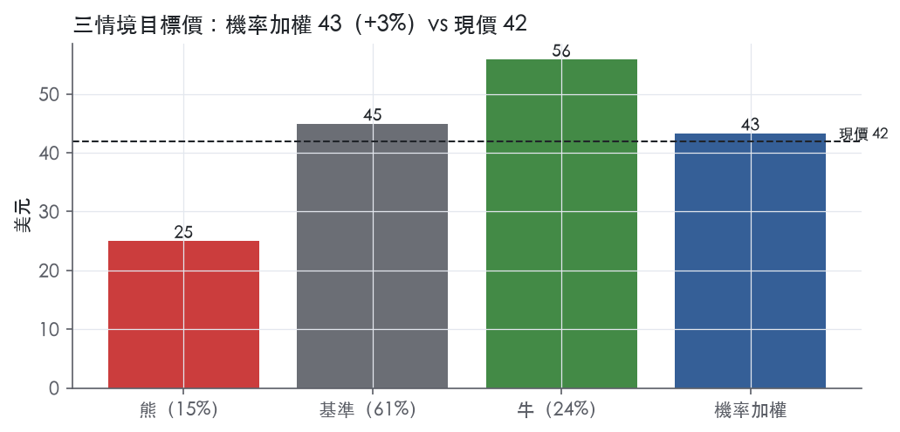
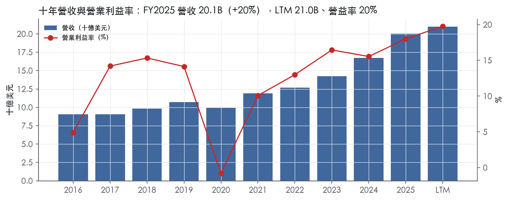
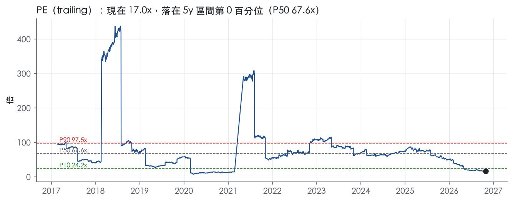
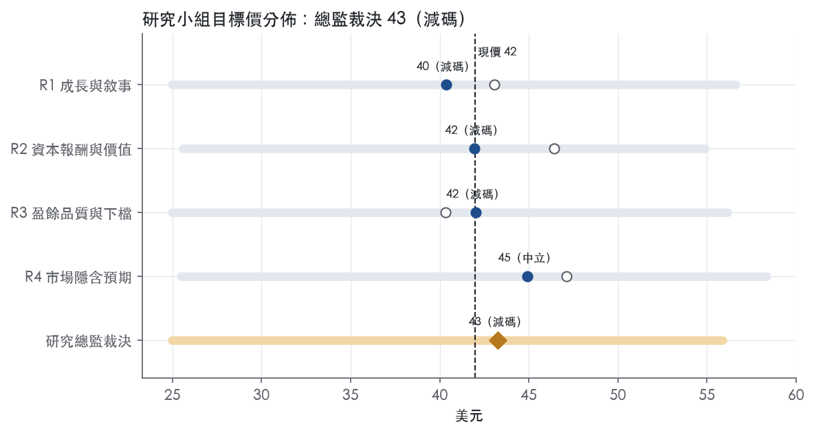
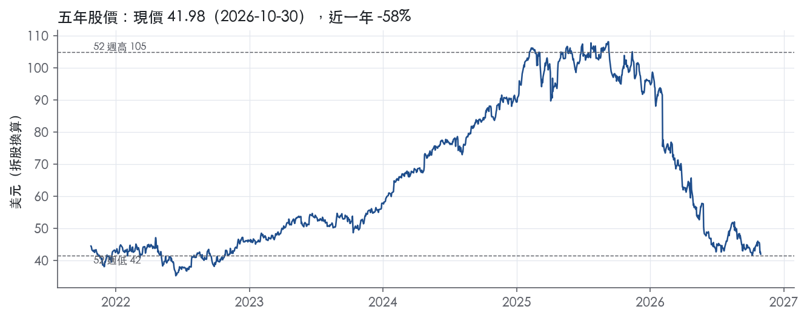

評等總表 › 醫療保健 › BSX
資安一次性、減速屬實，中性｜評等 減碼｜目標價 43
| 報告日 | 評等 | 目標價 | 當時股價 | 超額報酬 |
|---|---|---|---|---|
| 2026-10-30 | 減碼 | 43.28 | 41.98 | -6.5% |
| 評等 | 減碼（邊界，鄰近中立） |
| 12 個月目標價 | 43 美元 |
| 現價 | 41.98 美元（2026-10-30） |
| 預期報酬 | 股價 +3.1%＋股息 0.0%＝總報酬 +3.1%；同業籃門檻 9.6%，超額 -6.5% |
| 估值方法 | P/E 25.0x，套在未來四季的EPS |
| 三情境 | 熊 25／基準 45／牛 56 |
| 研究流程 | 四位研究員兩輪辯論＋研究總監裁決 |
| 資料來源 | SEC EDGAR XBRL、Tiingo、FRED（全免費） |
資安一次性、減速屬實，中性（研究總監裁決，四位研究員兩輪辯論後）
評等 減碼（邊界，鄰近中立）｜12 個月目標價 43 美元（總監三情境機率加權 45 與研究員中位數 42 各半）｜現價 41.98（2026-10-30）
預期報酬：股價 +3.1%＋股息 0.0%＝總報酬 +3.1%。同業籃門檻 9.6%，超額 -6.5%，離中立的分界不到三個百分點，屬邊界評等（落在其他級距的機率約四成）。
估值方法：P/E 25.0x，套在未來四季的EPS。三情境：熊 25（15%）／基準 45（61%）／牛 56（24%）。
立場中性而評等減碼：評等看的是「預期總報酬 3.1% − 同業籃門檻 9.6%」＝超額 -6.5%，不是絕對漲跌；中性但超額偏離門檻，代表情境機率或股利把報酬推離門檻。
評等說明：研究總監自己的機率加權目標價 45 美元對應「中立」；與研究員第二輪中位數 42 美元各半後為 43 美元，落入「減碼」。兩者只差一級，請把這檔讀成「中立～減碼」，正文裡總監的立場文字以「中立」寫成。
什麼會讓研究總監改變看法：FY2027 organic 指引中值 ≥ 7% 且公司揭露 Penumbra 交割後的去槓桿時程，轉看多、倍數上調到 28x；FY2027Q1 organic 仍負成長或 2027-04-01 減損測試認列重大減損，轉看空、倍數降到 MDT 以下。
| 過去四季（實際，FY2026Q2） | 未來四季 | 第 5–8 季 | 第 9–12 季 | |
|---|---|---|---|---|
| 營收（B） | 21.0B | 21.4B | 22.9B | 24.3B |
| 營收成長 | 13.5% | 2.0% | 7.0% | 6.0% |
| 營業利益率 | 19.8% | 17.0% | 18.5% | 19.5% |
| EPS（美元） | 2.47 | 1.80 | 2.13 | 2.40 |
| EPS 成長 | 47.1% | -27.2% | 18.3% | 12.8% |
| 每股股息（美元） | — | 0.00 | 0.00 | 0.00 |
| P/E（現價） | 17.0x | 23.4x | 19.7x | 17.5x |
| 股息殖利率（現價） | — | — | — | — |
過去四季為申報數字；預測為研究總監的假設、程式計算。倍數與殖利率都用現價計算，用來看現價對應各期獲利的高低。
| 情境 | 機率（歷史） | 故事 | 未來四季營收成長 | 第 5–8 季營益率 | 倍數 | 目標價 | 股價漲跌 |
|---|---|---|---|---|---|---|---|
| 熊 | 15%（13%） | 對應主要風險表第 2 條美國停滯為結構性加第 1 條資安復原不如預期、市佔回不來，由第 4 條 Penumbra 整合與 2027-04-01 減損測試放大，倍數降至低於現行 17.0x | -1.0% | 16.0% | 16.0x | 25 | -40.5% |
| 基準 | 61%（62%） | 底層成長約 5%、Q3'27 起踩事件低基期回補，營益率從資安谷底緩慢修復並吸收 Penumbra 利息攤銷，回購停擺去槓桿，倍數為 MDT 加一轉谷底穿透 | 2.0% | 18.5% | 25.0x | 45 | 7.1% |
| 牛 | 24%（25%） | 資安確認一次性、FY2027 指引回到高個位數，相對同業折價朝過去一年平均 −11.3% 修復但不到中位數 31.1x；股數改 0%（新債到位後不假設恢復回購） | 3.0% | 20.0% | 28.0x | 56 | 33.1% |
目標價由程式依研究總監的驅動與倍數計算；機率由研究總監給定。括號內是歷史頻率：把這檔股票過去十年 12 個月報酬的波動形狀，置中在基準情境，結果落在各情境附近的比例。

四位研究員用不同方法各自估值，回應研究總監的質疑後交出第二輪，最後由總監逐點裁決。各研究員的主張見第七章，裁決理由見第八章，完整論證見《研究底稿》。
| 立場（一輪→二輪） | 加權目標價（一輪→二輪） | 評等（一輪→二輪） | 第二輪倍數 | 熊～牛目標價 | |
|---|---|---|---|---|---|
| R1 成長與敘事 | 中性→看空 | 43→40 | 減碼→減碼 | 22.0x | 25～57 |
| R2 資本報酬與價值 | 中性→中性 | 46→42 | 中立→減碼 | 24.0x | 26～55 |
| R3 盈餘品質與下檔 | 中性→看空 | 40→42 | 減碼→減碼 | 23.0x | 25～56 |
| R4 市場隱含預期 | 看多→中性 | 47→45 | 中立→中立 | 21.0x | 25～58 |
| 研究總監裁決 | 中性 | 43 | 減碼 | 25.0x | 25～56 |
目標價由程式依各自的驅動與倍數計算；評等＝機率加權總報酬 − 同業籃門檻。
Boston Scientific 是一家全球醫療技術公司，產品涵蓋心血管、泌尿、內視鏡與神經調節等領域的介入式器材。公司自述為「a global medical technology leader for more than 45 years」，透過高性能解決方案服務未被滿足的患者需求並降低醫療成本¹。其產品組合協助醫師診斷與治療複雜的心血管、呼吸、消化、腫瘤、神經與泌尿疾病¹。客戶端是醫院、醫師與其他醫療照護提供者，這些機構再向各類第三方支付方（包括 Medicare、Medicaid 與私人保險）申請給付²。FY2025 營收為 20.07B 美元，年增 19.9%，LTM（至 FY2026Q2）營收 21.00B 美元。
公司依新聞稿揭露採用兩大報告分部：Cardiovascular（心血管）與 MedSurg（外科醫療），其中 MedSurg 再細分為 Endoscopy、Urology、Neuromodulation 三條產品線¹。從最近兩季數字看，Cardiovascular 是明顯的主力與成長引擎：FY2026Q2 營收 3.624B 美元，年增 8.3%（reported）、7.8%（operational/organic）¹；FY2026Q3 則降速至 3.406B 美元，年增 1.9%³。MedSurg 規模較小且成長較慢：FY2026Q2 營收 1.818B 美元、年增 5.9%¹，FY2026Q3 僅 1.733B 美元、年增 0.6%³。MedSurg 內部，Neuromodulation 是最快成長的子線，FY2026Q2 年增 12.7%、FY2026Q3 年增 13.1%¹³；相對地 Urology 與 Endoscopy 在 FY2026Q3 分別年減 3.2% 與 0.8%³。以 FY2026Q3 計算，Cardiovascular 約佔總營收三分之二（3.406B／5.138B），MedSurg 約佔三分之一。10-K 未就各分部毛利率或獲利能力做進一步揭露。
公司國際業務與美國本土呈現明顯的成長差異，國際市場（尤其新興市場）是公司策略重點。10-K 揭露 2025 年國際淨銷售佔全球淨銷售的 36%，且公司策略核心是持續在美國以外拓展銷售與市佔，包括新興市場²。從最近兩季地區表現看，LACA（拉丁美洲與加拿大）成長最快：FY2026Q2 年增 22.4%（reported）、16.2%（operational）¹，FY2026Q3 仍有 16.0%（reported）、10.5%（operational）³。EMEA 同樣穩健，FY2026Q2 年增 6.1%、FY2026Q3 年增 4.4%（reported，operational 更高達 6.1%，顯示有匯率逆風）³。APAC 則由 FY2026Q2 的雙位數成長（11.2%）轉為 FY2026Q3 的小幅衰退（-0.6% reported、-1.1% operational）¹³。美國本土成長明顯放緩，由 FY2026Q2 的 6.2% 降至 FY2026Q3 的 0.5%¹³，顯示本土基期墊高或需求降溫。公司在財務風險揭露中也提到在歐洲與亞洲部分國家使用應收帳款保理計畫，若全球經濟放緩可能影響轉讓應收帳款的能力²。
過去四季營收成長率逐季下滑，從雙位數降至個位數，FY2026Q3 更明顯降速並夾帶一次性干擾事件。FY2025Q3 營收 5.07B 美元，年增 20.3%，毛利率 69.9%，營益率 20.7%（is.grossMargin／）。FY2025Q4 營收 5.29B 美元，年增 15.9%，但營益率降至 15.6%，利潤率出現季度性壓縮。FY2026Q1 營收 5.20B 美元，年增 11.6%，營益率回升至 21.2%，淨利達 1.34B 美元、EPS 0.90（is.netIncome／），為近期單季最佳獲利表現。FY2026Q2 營收 5.442B 美元，年增 7.5%（reported）、7.0%（operational/organic），優於公司原先 5.5–7.5% 的 reported 指引區間；GAAP EPS 0.61 美元，調整後 EPS 0.86 美元，優於 0.82–0.84 美元的指引¹。該季公司完成先前宣布的 2B 美元加速股票回購計畫，回購約 4,000 萬股，並投資 1.5B 美元於 MiRus LLC，換取約 34% 股權及收購 MiRus TAVR 業務的優先選擇權¹。FY2026Q3 營收 5.138B 美元，僅年增 1.5%（reported、operational、organic 三者一致），GAAP EPS 降至 0.40 美元（去年同期 0.51 美元），調整後 EPS 0.73 美元（去年同期 0.75 美元）³。CEO Mike Mahoney 表示：「This has been a challenging year for Boston Scientific and I'm proud of how our global teams have responded, particularly to the cybersecurity incident, working with urgency and resilience to restore operations and continue supporting customers and patients.」³公司同時下修全年指引：FY2026 全年營收成長預估降至約 4.25%（reported）、3.75%（organic），全年調整後 EPS 預估下修至 3.16–3.18 美元（原為 3.28–3.32 美元）³；並預估 FY2026Q4 營收將年減約 1.0–3.0%，調整後 EPS 僅 0.77–0.79 美元³。這一連串下修明確指向 2026 年 8 月首次揭露的網路安全事件對營運與財務造成實質衝擊³。
公司將自身定位為「category leadership strategy」的執行者，強調紀律化投資於「highest-impact opportunities」，並持續對病患與醫師提供「meaningful innovation」¹。在心律管理領域，公司積極推進脈衝電場消融（PFA）平台：FARAPULSE 於 AVANT GUARD 研究中達成所有安全與有效性終點，並在統計上顯著優於抗心律不整藥物¹；FARAFLEX 標記與消融導管已進入關鍵性 FARADIGM 臨床試驗¹。在結構性心臟病領域，公司透過投資 MiRus LLC 取得 SIEGEL 球囊擴張式經導管主動脈瓣置換系統的獨家收購選擇權，布局 TAVR 市場¹。在左心耳封堵領域，公司啟動 Elite AF 臨床試驗以評估次世代 WATCHMAN Elite 裝置³。公司也積極尋求技術夥伴關係，例如與 Heartflow 合作推進 AI 導引的 CT 影像規劃工具應用於 PCI 手術³。在泌尿領域，公司持續擴充 StoneSmart 腎結石解決方案生態系與 SEISMIQ 血管內碎石導管的尺寸選項，取得多項 FDA 510(k) 許可³。整體策略上，10-K 明確指出公司以併購強化核心業務並拓展進入高成長鄰接領域，為近年多次收購的根本邏輯²。整體看，Boston Scientific 的成長引擎仍是靠心血管次世代技術（PFA、TAVR、左心耳封堵）與併購擴張驅動，但 FY2026 下半年遭網路安全事件打斷營運節奏，使全年與第四季指引同步下修，顯示短期執行風險已實質壓過產品管線的正面敘事。長期而言，若網路安全事件影響為一次性，Cardiovascular 分部的雙位數結構性成長動能應可在 FY2027 恢復，但 MedSurg 的 Urology／Endoscopy 疲弱需要觀察是否為市場飽和或單純季度波動。

BSX 在產品層級有法規核准與臨床證據構成的進入障礙，但這道障礙至今沒有轉成穩定高於資本成本的 ROIC，依本部定義評為「無」護城河。ROIC 有資料的 9 年中只有 1 年高於資本成本代理值 10.0%，十年平均減資本成本為 -3.6%。趨勢判為變寬，理由是 ROIC 從 FY2022 的 4.3%升到 FY2025 的 9.4%，已接近門檻。FY2026 下半年發生網路安全事件，公司也下修指引，我們因此沒有把握未來 5 年 ROIC 能站上資本成本，不給「窄」。
有實質證據的來源只有無形資產（法規核准與臨床證據），轉換成本只有弱證據。
數字只支持一半：毛利率支持產品層級的定價力，ROIC 則否定寬或窄護城河。毛利率十年平均 68.9%、標準差 2.1%，區間落在 65.0% 到 71.4%。即使是 FY2020 營收衰退的年度，毛利率最低也只到 65.0%。這種穩定度符合法規與臨床門檻撐住價格的說法。
衝突出在 ROIC。ROIC 十年平均 6.4%、標準差 3.0%、最高 10.7%，最新 9.4% 仍低於 10.0% 的資本成本代理值。營業利益率標準差 5.5%、最低 -0.8%，波動遠大於毛利率。我們的解讀是公司靠併購擴張，原文寫 "we have completed multiple acquisitions in recent years"²，大量資本因此進了商譽與無形資產。產品層級的高毛利被收購價格稀釋，股東實際拿到的報酬不足以支撐護城河評級。
資本成本代理值用的是當前 10 年債殖利率，過去低利率年份的實際門檻可能較低。即使放寬門檻，ROIC 長期平均仍然偏低，不足以翻轉評級。ROE 標準差 12.2%、最高 41.6%，明顯受一次性項目扭曲，不納入判斷。
最大的侵蝕來自買方議價力與價格導向的招標，其次是收購資本的報酬風險與營運執行風險。
目標倍數應與同業持平，不給溢價。護城河評為「無」，代表沒有依據假設長期超額報酬，終值期應假設 ROIC 收斂到資本成本。如果 FY2026 到 FY2027 的 ROIC 回到 FY2025 的 9.4%以上並站上資本成本，再考慮升級為「窄」並給予溢價。
| 指標 | 最新 | 十年平均 | 標準差 | 最低 | 最高 |
|---|---|---|---|---|---|
| ROIC | 9.4% | 6.4% | 3.0% | -0.3% | 10.7% |
| 毛利率 | 69.0% | 68.9% | 2.1% | 65.0% | 71.4% |
| 營業利益率 | 18.0% | 12.1% | 5.5% | -0.8% | 18.0% |
| FCF 利潤率 | 18.2% | 11.0% | 4.7% | -0.1% | 18.2% |
| ROE | 12.6% | 11.6% | 12.2% | -0.6% | 41.6% |
程式計算。資本成本代理值（10 年債＋5%）：10.0%；ROIC 平均減資本成本：-3.6%；ROIC 有資料的 9 年中，高於資本成本 1 年。
LTM 營業現金流／淨利 1.23x、近三年平均 1.67x，皆高於十年平均 0.83x，現金流持續超過淨利，盈餘不是靠應計堆出來的。LTM 自由現金流／淨利 0.99x、近三年 1.27x，同樣優於十年平均 0.59x，代表資本支出沒有侵蝕現金轉換。應計比率 LTM -1.9%、近三年 -3.6%，都是負值、遠優於十年平均 -1.2% 與紅線 5.0%，這是綠燈中最乾淨的一項，顯示近年盈餘品質其實比十年均值更好，不是變差。存貨成長 − 營收成長 FY2025 為 -15.1pp，遠低於 5pp 的黃線，營運資金沒有在吃盈餘。整體看，現金面是這張計分表裡最沒有爭議的部分。
2026 第三季 GAAP 歸屬淨利為 582M、每股 0.40 美元，去年同期為 755M、每股 0.51 美元，而調整後 EPS 本季為 0.73、去年同期 0.75 美元³。GAAP 與調整後 EPS 之間本季差了 0.33 美元、去年同期差了 0.24 美元，缺口在擴大，顯示本季一次性項目金額比去年同期更大。新聞稿說明調整後 EPS 排除「certain charges (credits)」，公司在前瞻指引段落明確列出這類項目包含：intangible asset impairment charges、acquisition-related charges、restructuring and restructuring-related charges、litigation-related charges³。這批節錄沒有附逐項金額的調整表，無法拆出 SBC、攤銷各自多少，但從 GAAP 稀釋 EPS 2.47與全年調整後 EPS 指引 3.16–3.18 美元的落差³可以看出，全年口徑調整金額相當可觀。管理層同時提到 2026 年 8 月的網路安全事件對營運與財務結果造成衝擊³，這類事件相關費用若被算進「certain charges」排除，屬於真實的現金流出與營運中斷成本，不是純會計調整，估值時不該完全加回。無形資產減損與重組費用若屬一次性、非現金，加回尚可接受；但訴訟相關費用通常反覆出現，加回需謹慎。
淨負債／EBITDA LTM 2.17x、近三年平均 2.30x，都低於十年平均 3.36x，但仍落在黃燈區間，顯示槓桿比十年均值已改善，但還沒到綠燈的 1.50x 以下。利息保障倍數 LTM 11.4x、近三年 9.24x，遠高於十年平均 5.15x 與綠線 8.00x，付息能力不是問題。（股利＋回購）／淨利近三年僅 1.8%、十年平均卻是 -167.9%、燈號黃，這組數字落差極大代表歷史上有部分年度淨利為負或極低、分母失真，而非公司真的舉債回饋股東，近三年 1.8% 其實偏低，顯示資本配置重心在去槓桿與再投資而非回購。稀釋股數年變動 LTM -1.4%，代表股數淨減少、回購有抵銷股權薪酬稀釋的效果。另外 10-K 揭露公司正進行多年期 ERP 系統轉換，2025 年 8 月已完成 EMEA 商業營運一大部分的轉換，並明確表示「未來階段的導入預期將對內控產生重大影響」⁴，這是一個財報編製流程層面的潛在風險，雖然不是計分表紅旗，但在未來幾年需要留意財務數字的可比性。
程式標出三條淨利率跳動紅旗，皆發生在 2017–2020 之間，且都早於 LTM 與近三年窗口。FY2017→FY2018 淨利率跳升 +16 個百分點：FY2017 淨利僅 0.10B（營收 9.05B，資料包年度表），FY2018 回升到 1.67B（營收 9.82B，資料包年度表），這是基期極低造成的跳動，而非盈餘品質惡化，屬於一次性低基期效應。FY2018→FY2019 再跳 +27 個百分點：FY2019 淨利一舉衝到 4.70B（營收 10.73B，資料包年度表），同期 CFO 僅 1.84B（資料包年度表），淨利遠高於現金流，很可能是處分或稅務等非經常性利得推高 GAAP 淨利，而非核心營運改善，這點值得留意，但由於年度已久遠、不影響 LTM 評分，可視為歷史性一次性事件。FY2019→FY2020 淨利率重摔 -45 個百分點：FY2020 淨利轉負至 -0.08B（營收 9.91B，資料包年度表），對應 2020 年新冠疫情造成的手術量下滑與一次性減損，是宏觀衝擊而非公司特有的盈餘操縱問題。三條紅旗共同點是都發生在 2017–2020 窗口、且都可用「低基期／一次性利得／疫情衝擊」解釋，近三年與 LTM 的應計比率、現金轉換指標都是乾淨的綠燈，代表這些歷史波動沒有延續到近期財報，可視為已解釋、非持續性的假警報，不需要對當前盈餘打折。至於計分表本身兩個黃燈——淨負債／EBITDA 與（股利＋回饋）／淨利——已在上一節說明，皆屬可解釋的槓桿與資本配置週期性變化，不是會計造假訊號。
估值應以 GAAP 稀釋 EPS 2.47為盈餘品質檢查的基準，再對照調整後 EPS 做敏感性分析，因為本季非 GAAP 排除項目涵蓋網路安全事件衝擊與訴訟費用，這兩類不宜全額加回。現金轉換與應計比率都是乾淨綠燈，盈餘本身不需要因「做假帳」風險打折，但考量淨負債／EBITDA 仍在黃燈區間（2.17x），且 ERP 轉換期內控變動存在未來可比性風險，估值倍數不宜貼近十年均值的高點（如 ev_ebitda 10y P50 28.9x），應維持審慎的中性倍數。槓桿本身雖未到紅燈，但在目前 13.3x EV/EBITDA已遠低於歷史中位數的情況下，估值收斂空間主要來自基本面修復而非槓桿擴張，不應假設公司會大舉加碼回購推升每股盈餘。
| 項目 | LTM | 近三年 | 十年 | 燈號 | 規則 |
|---|---|---|---|---|---|
| 營業現金流／淨利 | 1.23x | 1.67x | 0.83x | 綠 | ≥1.00x 綠、<0.80x 紅 |
| 自由現金流／淨利 | 0.99x | 1.27x | 0.59x | 綠 | ≥0.90x 綠、<0.60x 紅 |
| 應計比率（(淨利−CFO)／平均總資產） | -1.9% | -3.6% | -1.2% | 綠 | ≤0.0% 綠、>5.0% 紅 |
| SBC／營收 | 1.5% | 1.6% | 1.5% | 綠 | ≤3.0% 綠、>8.0% 紅 |
| 淨負債／EBITDA | 2.17x | 2.30x | 3.36x | 黃 | ≤1.50x 綠、>3.00x 紅 |
| 利息保障倍數（營業利益／利息） | 11.4x | 9.24x | 5.15x | 綠 | ≥8.00x 綠、<3.00x 紅 |
| 稀釋股數年變動 | -1.4% | 1.3% | 0.9% | 綠 | ≤0.0% 綠、>3.0% 紅 |
| （股利＋回購）／淨利 | — | 1.8% | -167.9% | 黃 | ≥50.0% 綠、<0.0% 紅 |
| 存貨成長 − 營收成長（FY2025） | -15.1pp | — | — | 綠 | ≤5pp 綠、>15pp 紅 |
程式計算；燈號以 LTM（無則近三年平均）判定。
| 風險 | 觸發指標（看什麼數字、在哪裡看） | 對 EPS 的影響方向與粗略幅度 | 未來 12 個月發生機率（高／中／低） | 出處 |
|---|---|---|---|---|
| 網路安全事件後續衝擊與營運復原不如預期 | 季度 8-K／10-Q 中「cybersecurity incident」相關敘述、Q4 實際營收年增是否落在估計的 -3.0%～-1.0% 區間、調整後 EPS 是否落在 0.77–0.79 美元指引內 | 負向，已導致全年調整後 EPS 指引從 3.28–3.32 美元下修至 3.16–3.18 美元 | 高 | 8-K 財報新聞稿（2026-10-28） |
| 美國本土成長近乎停滯，若非一次性則意味核心市場飽和 | 每季 8-K 中「U.S.」地區淨銷售年增率 | 負向，美國佔比最大，FY2026Q3 美國年增僅 0.5%（reported/operational） | 中 | 8-K 財報新聞稿（2026-10-28） |
| Urology／Endoscopy 轉為負成長，MedSurg 整體動能轉弱 | 每季 8-K 分部表中 Urology、Endoscopy 的年增率 | 負向，FY2026Q3 Urology 年減 3.2%、Endoscopy 年減 0.8%（reported） | 中 | 8-K 財報新聞稿（2026-10-28） |
| 併購整合失敗或商譽／無形資產減損（含 Penumbra 14.5B 美元交易） | 10-K Note 揭露的商譽減損測試結果、年度 4 月 1 日減損測試公告、Penumbra 交割後的整合進度與相關費用揭露 | 負向，若減損發生屬一次性但金額可能重大，資料包未提供具體金額 | 中 | 10-K 年報 FY2025 Item 1A（風險因素） |
| 單一來源供應商／無菌處理中斷（含 PFAS、環氧乙烷法規） | 公司是否公告生產線中斷、FDA 對無菌處理設施的檢查結果、PFAS 相關法規時程 | 負向，方向明確但幅度「大」小無法量化 | 低 | 10-K 年報 FY2025 Item 1A（風險因素） |
網路安全事件是目前最確定、影響最大的風險，因為它已經兌現並反映在數字上。CEO Mike Mahoney 在 FY2026Q3 財報新聞稿中坦承「This has been a challenging year...particularly to the cybersecurity incident」³。公司同時將全年營收成長指引下修至約 4.25%（reported）、3.75%（organic），調整後 EPS 下修至 3.16–3.18 美元（原為 3.28–3.32 美元），並預估 Q4 營收將年減 1.0–3.0%，調整後 EPS 僅 0.77–0.79 美元³。這代表單一事件已讓全年獲利指引縮水，且公司並未在新聞稿中揭露事件的財務影響金額、是否涉及資料外洩或系統停機時長，透明度不足，監測重點是未來幾季是否出現額外一次性費用或營收缺口。
美國本土成長停滯是結構性隱憂。FY2026Q2 美國年增仍有 6.2%，但 FY2026Q3 驟降至 0.5%（reported 與 operational 一致）³。美國是公司最大單一市場（FY2026Q3 淨銷售 3.309B 美元，佔總營收約六成四），若放緩非單純網路安全事件造成的季度性干擾，而是程序量或定價壓力的結構性轉弱，將直接壓縮公司最賺錢市場的槓桿效益。10-K 本身也點名「medical procedure volumes」與「average selling prices」的下滑風險為可能材料性衝擊⁵。
MedSurg 內部分化值得獨立列為風險，因為 Urology 與 Endoscopy 已轉為負成長。FY2026Q3，Urology 年減 3.2%、Endoscopy 年減 0.8%（均為 reported，operational 相近）³，相較於 Neuromodulation 同期年增 13.1%，形成鮮明對比³。業務概況章指出 MedSurg 約佔總營收三分之一，若 Urology／Endoscopy 的衰退持續，將拖累整體營益率，因為 10-K 未揭露分部毛利率，無法排除這兩條產品線本身利潤率較高的可能性。
併購與商譽減損風險在 10-K 中被列為獨立章節，且公司今年揭露了規模達 14.5B 美元的 Penumbra 收購案，資金來源包含約 11.0B 美元新舉債²。10-K 明確寫道公司每年 4 月 1 日測試商譽減損，且「small changes in other key assumptions, may result in the recognition of significant asset impairment charges」⁵。由於資料包未提供商譽餘額或 Penumbra 交易後的槓桿比率，本報告不自行推算，僅提示此為可監測的年度事件（4 月減損測試公告、交割後的季度商譽揭露）。
供應鏈與無菌處理中斷風險是 10-K 寫得最細的傳統風險之一，但觸發機率相對低，因為公司自述「supply of certain raw materials and components...has been stable」⁵。不過原文也點名 PFAS 原料供應商正在停止供貨、環氧乙烷滅菌法規持續演變，這兩項是可監測的政策變數（美國/各州 PFAS 立法時程、FDA 對滅菌設施的查核結果）⁵。
現價 41.98 對應 trailing（過去四季）P/E 17.0x、EV/EBITDA 13.3x、EV/EBITA 14.6x、EV/Sales 3.5x、FCF 殖利率 5.9%。主要估值倍數 P/E 現在 17.0x，落在5 年區間第 0 百分位（P10／P50／P90 = 24.2x／67.6x／97.5x）。

把程式的機械基準預測放到現價下，市場付的前瞻倍數是：P/E（未來四季） 17.9x、P/E（第 5–8 季） 16.2x。反推 DCF 顯示市價隱含未來五年營收年成長 4.9%（WACC 9.0%、終值成長 3.0%、FCF 利潤率 18.4%，SBC 不加回）。
| 倍數 | 現在 | 5 年 P10 | 5 年 P50 | 5 年 P90 | 現在分位 | 全期 P50 |
|---|---|---|---|---|---|---|
| P/E | 17.0x | 24.2x | 67.6x | 97.5x | 0.1% | 64.4x |
| EV/EBITDA | 13.3x | 18.5x | 29.8x | 39.2x | 0.1% | 28.9x |
| EV/EBITA | 14.6x | 20.4x | 33.9x | 43.7x | 0.1% | 33.0x |
| EV/EBIT | 17.8x | 25.3x | 48.8x | 60.6x | 0.1% | 47.5x |
| EV/Sales | 3.5x | 4.6x | 6.4x | 9.2x | 0.1% | 6.1x |
| P/S | 2.9x | 4.2x | 5.8x | 8.6x | 0.1% | 5.4x |
| P/FCF | 17.1x | 24.4x | 52.9x | 96.8x | 0.1% | 54.3x |
trailing 倍數（股價 ÷ 過去四季）；分位以每個交易日計算。
同業籃：SYK, MDT, ISRG, EW, ABT（手動名單（playbooks/peers.yaml））。評等門檻 9.6%：同業「倍數不變下持有一年」的隱含報酬中位數（＝ FCF 殖利率 ×(1＋g)＋g，g 為 5 年營收年複合成長並夾在 −2%～8%），每家夾在 0～15%、P/E 低於 5 倍視為資料可疑而排除，中位數再限制在 10 年債到 10 年債＋5% 之間。
| 代號 | 市值 | 5 年營收 CAGR | 營益率 | ROIC | P/E | 5 年 P/E 中位數 | EV/EBITDA | P/FCF | 隱含報酬 |
|---|---|---|---|---|---|---|---|---|---|
| BSX | 61.9B | 15.2% | 19.8% | 9.4% | 17.0x | 67.6x | 13.3x | 17.1x | 14.3% |
| SYK | 111.1B | 11.8% | 20.7% | 10.9% | 31.1x | 42.0x | 17.5x | 24.3x | 12.4% |
| MDT | 123.6B | 3.8% | 18.1% | 7.5% | 23.7x | 26.5x | 14.7x | 20.2x | 9.0% |
| ISRG | 149.7B | 18.2% | 28.4% | 21.1% | 52.4x | 69.6x | — | 41.6x | 10.6% |
| EW | 53.1B | 6.7% | 22.3% | 15.7% | 53.0x | 36.2x | 30.6x | 37.0x | 9.6% |
| ABT | 185.0B | 5.1% | 17.1% | 11.3% | 29.7x | 29.1x | 19.5x | 25.1x | 9.3% |
| 同業中位數 | 6.7% | 20.7% | 11.3% | 31.1x | 36.2x | 18.5x | 25.1x | 9.6% |
全部 trailing，程式以各公司 SEC XBRL 與 Tiingo 行情計算；第一列為本檔。
P/E 相對同業中位數：現在 -45.3%，過去 1 年平均 -11.3%、3 年 74.6%、5 年 92.3%；EV/EBITDA 相對同業中位數：現在 -28.4%，過去 1 年平均 1.1%、3 年 31.5%、5 年 27.0%。
事後實現前瞻倍數帶（P/E，2018-08-17..2025-08-15）：P10／P50／P90 = 15.0x／46.7x／95.8x。它是每個交易日的股價除以之後四季實際實現的指標；一年後，今天的第 5–8 季正是那時的未來四季，所以這條帶是 12 個月目標價的同口徑倍數。因為用的是事後實際而非當時預期，過去成長超乎預期的公司這條帶會偏低。
程式的機械基準（成長率從過去四季年增率三年收斂到 6%、利潤率持平）用 事後實現前瞻 P/E P50 估值得到 121（188.4%），市場現行前瞻倍數（現價 ÷ 基準 未來四季指標）一年後持平，套在基準 第 5–8 季指標得到 46。這兩個數字只是參考點，不是本報告的目標價；研究員對這個定價的回應在第七章。
下表是每位研究員第一輪（各自獨立）與第二輪（回應研究總監的質疑後）的結果。目標價全由程式依各自的假設計算。
| 立場（一輪→二輪） | 加權目標價（一輪→二輪） | 評等（一輪→二輪） | 第二輪倍數 | 熊～牛目標價 | |
|---|---|---|---|---|---|
| R1 成長與敘事 | 中性→看空 | 43→40 | 減碼→減碼 | 22.0x | 25～57 |
| R2 資本報酬與價值 | 中性→中性 | 46→42 | 中立→減碼 | 24.0x | 26～55 |
| R3 盈餘品質與下檔 | 中性→看空 | 40→42 | 減碼→減碼 | 23.0x | 25～56 |
| R4 市場隱含預期 | 看多→中性 | 47→45 | 中立→中立 | 21.0x | 25～58 |
| 研究總監裁決 | 中性 | 43 | 減碼 | 25.0x | 25～56 |
目標價由程式依各自的驅動與倍數計算；評等＝機率加權總報酬 − 同業籃門檻。
分歧度：第一輪 加權目標價 40～47（區間＝現價的 16%）· 倍數 20～26x · 立場 中性×3、看多×1；第二輪 加權目標價 40～45（區間＝現價的 11%）· 倍數 21～24x · 立場 看空×2、中性×2。

| 研究員 | 第二輪主張 | 堅持的理由 |
|---|---|---|
| R1 成長與敘事 | 偏空，目標倍數 22x，略低於 MDT 的 23.7x。 | 低基期反彈是真的，第二年營收成長維持 8.0%。 |
| R2 資本報酬與價值 | 中性偏空，目標倍數 24x，與 MDT 的 23.7x 持平。 | 公司沒有回購的年份股數逐年上升，他假設股數每年增加 0.5%。 |
| R3 盈餘品質與下檔 | 偏空，目標倍數 23x，略低於 MDT 的 23.7x。 | 減速早於資安事件，底層成長停在事件前指引的 3–5%。 |
| R4 市場隱含預期 | 中性，目標倍數 21x，套在未來第五到第八季的 EPS。 | 市場把倍數壓得太低，但對 EPS 估得太高，兩者相抵。 |
每位研究員的逐條回應與完整論證見《研究底稿》（BSX_研究底稿_2026-11-01.docx）。
| 分歧點 | R1 | R2 | R3 | R4 | 什麼資料會分出勝負 |
|---|---|---|---|---|---|
| Q5–Q8 營收成長：底層是 3–5% 還是 7% | 8.0%，以 Q2 心血管 organic 7.8% 為底層 | 7.0%，中個位數底層加低基期回補 | 6.0%，以事件前 Q3 指引 3–5% 為底層 | 7.5%，以 Q2 指引 5.5–7.5% 為底層 | FY2027 首次 organic 指引中值（約 2027 年 2 月）；FY2027Q1 organic 年增（約 4 月底） |
| NTM 營益率：資安費用與 Q4 季節性 | 17.5%（y2 20.0%） | 17.0%（y2 18.5%） | 17.5%（y2 18.5%） | 17.0%（y2 18.5%） | FY2026Q4 GAAP 營益率、10-K 對資安費用的揭露（2027 年 2 月） |
| 目標倍數的錨與口徑 | 22x ntm，MDT 之下、Penumbra 扣在倍數 | 24x ntm，MDT 持平 | 23x ntm，MDT 略折 | 21x q5_q8，前瞻帶 P10–P25 下緣 | FY2027 指引後，P/E 相對同業折價是否從 −45.3% 收斂 |
| 股數年變動：Penumbra 後回購停擺 | 0.0% | +0.5% | 0.0% | 0.0% | Penumbra 交割公告的資金結構；FY2027Q1 10-Q 稀釋股數 |
| 牛／熊機率順序 | 17／20，熊高 | 21／22，熊高 | 16／16 | 22／15，牛高 | 程式歷史對照：四人形狀下牛 16–24%、熊 13–17% |
分歧一（rev_growth_y2）：選 R2 的 7.0%。 決定性的證據是 R3 抄的日期：公司在 2026-07-29、資安事件（首次揭露 2026-08-26）之前，就把 Q3 指引給到 3–5%¹，Q2 Urology organic 也只有 0.8%。「減速早於事件」這點 R3 贏；R1 拿 Q2 心血管 organic 7.8% 當全公司底層不成立，心血管只佔三分之二，MedSurg 在事件前已轉弱。但 R3 的 6.0% 有兩個缺口：一是公司 Q2 以 7.5% 打敗自己 5.5–7.5% 的指引（業務概況章），3–5% 是地板不是中點；二是他自己承認 Q5–Q8 的前兩季踩在 Q3'26 年增 1.5%、Q4'26 指引年減 1–3% 的低基期上³。R4 的 7.5% 建立在 Q2 指引區間，那是減速前一季的區間。7.0% 是「底層約 5% 加兩季低基期回補」，數字落在 R2，證據卻來自 R3 的材料；R2 營收紀錄勝過基準只有 46%，所以附一句：這個數字被 R1、R4 兩個紀錄較好的人夾在中間。y1 取 2.0%（R1／R3／R4），R2 的 3.0% 要 2027 上半年跑在事件前指引之上，沒有證據；y3 維持基準 6.0%。
分歧二（op_margin_y1／y2）：選 R4 的 17.0%／18.5%／19.5%。 Q3'26 GAAP EPS 0.40 對調整後 0.73，去年同期 0.51 對 0.75³，缺口在擴大（盈餘品質章），公司又明說無法預估減損、併購、重組、訴訟費用。Q4 GAAP 營益率歷來全年最低（14.8%、15.6%），今年 Q4 營收還在年減。R1、R3 的 17.5% 等於假設事件費用到此為止，但盈餘品質章的結論是資安成本不該加回。y2／y3 低於基準 19.8% 的部分，是用營益率代理模型吃不到的 Penumbra 約 11.0B 新債利息與攤銷（主要風險章引 10-K FY2025 Item 1）。R1 的 20.0%／20.5% 把這筆負擔搬到倍數裡扣，和他自己「模型沒反映新債利息」的說法矛盾，EPS 與倍數各自失真。預測紀錄也站這邊：R1 營業利益誤差中位數 +2.6%、我自己 +0.9%，都偏高。
分歧三（multiple）：own，25x GAAP EPS @ ntm，錨同業 trailing。 同業錨配 ntm，這是我在第一輪對 R2、R3 要求的一致性。R4 的前瞻帶錨退回：P10 15.0x 到 P25 42.3x 之間是空的，R2 第二輪對分母的解釋（FY2019 利得、FY2020 虧損雙向扭曲）成立，21x 在帶上沒有位置；以程式結果看，R4 的 21x 套在 Q5–Q8 得 44.88，R2 的 24x 套在 NTM 得 43.51，口徑換算後兩人其實站在一起。四個人實際上都錨在 MDT 23.7x。我接受這個錨，但 MDT 持平少算了一件我在 G2 已經接受的事：一年後 BSX 的 LTM 是事件年，它的「未來四季」正好踩在事件年上反彈，MDT 的 LTM 沒有這種谷底；市場對看得見盡頭的谷底付的 trailing 倍數高於常態，所以在 MDT 之上加一轉，數字上與 R4 的位置相當。不能再往 ABT 的 29.7x 靠，原因是個股的：Penumbra 同時推高投入資本與槓桿，ROIC 9.4%本來就低於資本成本，護城河章評「無」不給溢價。R1 的 22x 把 Penumbra 扣了兩次（營益率、股數之外又扣倍數），R3 的 23x 折價理由（ERP 內控、資安費用未揭露）已在 y1 營益率裡。25x 高於現行 17.0x 持平，理由也是個股的：17.0x 的分母含 Q1'26 淨利 1.34B 對 CFO 0.35B 的非現金利得，乾淨的現行倍數更高；市場隱含 17.9x 套的是基準模型 11% 成長、19.8% 營益率的 NTM EPS，換成修正後的谷底 EPS，市場現在付的前瞻倍數已高於 17.9x（R4）。沒有人用利率壓倍數，利率也不是理由：10 年債 4.98 一年不動（本行前提），敏感度 t 值 −0.6 不可用。
分歧四（share_change_pct）：own，0.0%。 R2 的 +0.5% 有年度表撐腰：FY2020–FY2025 沒有大額回購時，稀釋股數從 1.42B 爬到 1.49B。但 2026Q2 的 2B 加速回購（約 4,000 萬股，業務概況章）只有一部分進了 LTM 平均股數，NTM 吃到整年效果，剛好抵掉 SBC 的稀釋；之後回購停擺、股數回升的情節放在熊情境的 +1.0%。
分歧五（情境機率）：own，牛 24／基準 61／熊 15。 R1（熊 20 對牛 17）和 R2（22 對 21）仍是熊高於牛。R2 列的三個理由裡，ROIC 低於 10% 與商譽減損警語第一輪就在他的護城河章裡，只有 Penumbra 是新證據，而它已透過營益率與股數進了基準情境，不能再加一次熊尾。R3 的論證我接受：2027-04-01 的減損測試非現金、市場通常穿透，撐不起額外五個百分點。R4 的順序正確。本部 22 份報告全部熊高於牛，這一份不延續。
漂移與總經。 沒有退回的漂移。R2 向中位數靠攏 67%，但每一步都由我轉發的 Penumbra 新證據驅動（V2）；R4 的 54% 來自 E2 的口徑更正與 E5 的 Penumbra 處理，最接近邊線的是 y2 從 9% 降到 7.5%——引用的 Q2 指引他第一輪就有，但 E4 關於成長組成（心血管佔三分之二、Q3 只剩 1.9%）的證據同樣適用於 y2，接受。R1 是遠離中位數，R3 的變動都對應我的 Q1、Q3 意見。總經偏離：四人都沒提，我也不加——10 年債的個股敏感度不顯著，本行前提直接套用，macro_deviations 為空。
| 驅動 | 機械基準 | 裁決 | 理由 |
|---|---|---|---|
| rev_growth_y1 | 11.0% | 2.0% | NTM 含 Q3'26 實際 +1.5% 與 Q4'26 指引 −1～−3%³；基準的 LTM 外推看不到事件 |
| rev_growth_y2 | 8.5% | 7.0% | 分歧一 |
| rev_growth_y3 | 6.0% | 6.0% | 不變，同業 5 年 CAGR 中位數 6.7% 為基準率 |
| op_margin_y1／y2／y3 | 19.8% | 17.0%／18.5%／19.5% | 分歧二；y2 起含 Penumbra 利息與攤銷的代理 |
| share_change_pct | −1.2% | 0.0% | 分歧四 |
Penumbra 的營收與營業利益不納入：材料沒有規模與交割日，硬加就是編數字；它的負擔以營益率與股數代理。這是已知的模型缺口，交割條件公布後要重跑。
目標倍數 25x，指標 GAAP 稀釋 EPS，口徑 未來四季（一年後的 LTM，與同業 trailing 表同口徑）。錨：MDT trailing P/E 23.7x（5 年 CAGR 3.8%、營益率 18.1%、ROIC 7.5%）加一轉谷底穿透；仍明顯折價於同業中位數 31.1x，折價小於現在的 −45.3%，也遠不到過去五年 +92.3% 的溢價。自家 5 年 P50 67.6x 是高成長期的價格，不用。主尺用 GAAP 而非調整後 EPS：無形資產佔總資產 15.3%（劇本），全年調整後 EPS 指引 3.16–3.18³與 GAAP 的差距在 Penumbra 之後只會更大，GAAP 配同業 GAAP 倍數才是同口徑。
機率怎麼來：以基準為中位數，牛情境距基準約兩成多、熊情境約四成多；同形狀的程式對照，R3 是 20／65／15，R2 是 24／61／15。熊 15% 就在歷史頻率上，不往上加：資安與 Q4 指引已在基準裡，減損測試非現金，熊情境本身的距離已是歷史上 7–10% 的尾部事件（≤ −40% 佔 7%、≤ −30% 佔 10%）。牛 24% 也在歷史上，不往上加：倍數在 0.1% 分位與 2027 年 2 月 FY2027 指引這個有日期的觸發，說的是「不該低於歷史」；Penumbra 的槓桿擋住「高於歷史」。基準 61% 為餘數。
差距不在成長：反推 DCF 的市價隱含五年營收年化 4.9%，我們 2%／7%／6% 的路徑年化後落在同一區間（R4 的 E2 更正）。差距在倍數與分母：市場對基準 NTM EPS 付 17.9x 看起來極端，但那個分母建立在 11% 成長上；換成谷底年 EPS，市場付的倍數已不算低，我們的 25x 只比它多一轉谷底穿透，參照 R2 第二輪 24x 的程式結果 43.51（+3.6%），基準情境報酬仍在個位數，低於同業籃 9.6% 的門檻。立場中性，與程式評等（預期落在中立）一致：不看多，因為 Penumbra 約 11.0B 新債把復原後的 FCF 先抵押給去槓桿，ROIC 在資本成本之下，底層成長只剩中個位數；不看空，因為事件確實一次性、倍數在十年 0.1% 分位、P/FCF 17.1x 與隱含報酬 14.3% 都是同業籃裡最好的，牛熊賠率為正。若程式落在減碼，差距來自門檻由 SYK 12.4% 這類高隱含報酬撐高，以及谷底年分母，不是我們看空個股。
現價 41.98 → 點估目標價 45 → 機率加權目標價 45 → 目標價 43，差距拆成五段：成長順延 -2 美元（市場現行倍數 17.0x 一年後持平、獲利照機械基準）；倍數差 +19 美元（總監倍數 25.0x vs 市場持平倍數 17.0x，同一機械基準預測）；盈餘差 -14 美元（總監預測的未來四季EPS 0.0B vs 機械基準 0.0B，同一倍數）；情境不對稱 -0 美元（機率加權減點估）；研究小組平均 -1 美元（總監機率加權 45 與研究員第二輪中位數 42 各半）。各段相加等於目標價減現價。本階段未接賣方共識，差距以市場隱含預期為對照。
| 驅動 | 機械基準 | 研究總監 | 差異 |
|---|---|---|---|
| 未來四季營收成長 | 11.0% | 2.0% | -9.0 pp |
| 第 5–8 季營收成長 | 8.5% | 7.0% | -1.5 pp |
| 第 9–12 季營收成長 | 6.0% | 6.0% | ＝ |
| 未來四季營益率 | 19.8% | 17.0% | -2.8 pp |
| 第 5–8 季營益率 | 19.8% | 18.5% | -1.3 pp |
| 第 9–12 季營益率 | 19.8% | 19.5% | -0.3 pp |
| D&A／營收 | 6.7% | 6.7% | ＝ |
| 資本支出／營收 | 4.3% | 4.3% | ＝ |
| SBC／營收 | 1.5% | 1.5% | ＝ |
| 稅率 | 19.1% | 19.1% | ＝ |
| 股數年變動 | -1.2% | 0.0% | +1.2 pp |
研究總監只寫偏移，未寫的沿用基準。
| 期 | 營收 | 成長 | 營益率 | 營業利益 | EBITDA | EBITA | 淨利 | EPS | FCF | 期末淨負債 |
|---|---|---|---|---|---|---|---|---|---|---|
| 未來四季 | 21.4B | 2.0% | 17.0% | 3.6B | 5.1B | 4.6B | 2.7B | 1.80 | 3.5B | 8.6B |
| 第 5–8 季 | 22.9B | 7.0% | 18.5% | 4.2B | 5.8B | 5.2B | 3.1B | 2.13 | 4.0B | 4.6B |
| 第 9–12 季 | 24.3B | 6.0% | 19.5% | 4.7B | 6.4B | 5.8B | 3.5B | 2.40 | 4.5B | 0.1B |
程式依上表的驅動計算；季度用最近四季季節性分攤；不含營運資金變動。
估值方法：P/E 25.0x，套在未來四季的EPS。研究總監目標倍數的錨：同業 trailing：MDT P/E 23.7x（5 年 CAGR 3.8%、營益率 18.1%、ROIC 7.5%）加一轉谷底穿透（一年後 LTM 為事件年、未來四季反彈）；Penumbra 11.0B 新債與 ROIC 低於資本成本、護城河評無，擋住向 ABT 29.7x 與同業中位數 31.1x 靠攏；前瞻帶分母受 GAAP 一次性項目雙向扭曲不採用。
計算：EPS（未來四季） 1.80 × 25.0x → 點估目標價 45（7.1%）；隱含 P/E（未來四季）25.0x、P/E（第 5–8 季）21.1x、EV/EBITDA（第 5–8 季）13.0x、FCF 殖利率（第 5–8 季）6.1%。
總監三情境機率加權目標價 45，研究員第二輪中位數 42，兩者各半＝目標價 43；預期報酬 股價 +3.1%＋股息 0.0%＝總報酬 +3.1%；減評等門檻 9.6%（同業籃隱含報酬中位數（SYK, MDT, ISRG, EW, ABT））＝超額報酬 -6.5% → 評等 減碼（超額 >+15% 買進、+5～+15% 加碼、±5% 中立、−5～−15% 減碼、<−15% 賣出）。同一份資料重開研究小組，超額約有正負四個百分點的雜訊（一個標準差，二十檔實測）；以此估計，評等落在其他級距的機率約四成。超額離中立的分界不到三個百分點，應視為邊界評等。
| 情境 | 機率 | 未來四季成長 | 第 5–8 季成長 | 第 5–8 季營益率 | EPS（未來四季） | 倍數 | 目標價 |
|---|---|---|---|---|---|---|---|
| 熊 | 15% | -1.0% | 1.0% | 16.0% | 1.56 | 16.0x | 25 |
| 基準 | 61% | 2.0% | 7.0% | 18.5% | 1.80 | 25.0x | 45 |
| 牛 | 24% | 3.0% | 9.0% | 20.0% | 2.00 | 28.0x | 56 |
| 主張 | 驗證日 | 看哪個數字 | 門檻 |
|---|---|---|---|
| FY2027 首次全年 organic 營收成長指引中值不低於 4.5% | 2027-02-28 | FY2027 organic net sales growth guidance midpoint | >= 4.5% |
| FY2027Q1 organic 營收年增回到正成長且不低於 3%，證明無永久市佔流失 | 2027-05-15 | FY2027Q1 organic net sales growth YoY | >= 3.0% |
| 2027-04-01 商譽減損測試不認列重大減損 | 2027-05-15 | FY2027Q1 10-Q goodwill impairment charge | = 0（無重大減損） |
| FY2027Q2 GAAP 營業利益率回到 18% 以上 | 2027-08-15 | FY2027Q2 GAAP operating margin | >= 18.0% |
到期由程式結算（第 5 階段帳本）。
內文上標數字對應下列公司申報文件；未標上標的分析與判斷，是研究小組的觀點。報告中的每個數字都經程式逐一核對資料包或原文。
| 期 | 營收 | 成長 | 毛利率 | 營益率 | EBITDA | 淨利 | EPS | CFO | FCF | ROIC | 淨負債 | 稀釋股數 |
|---|---|---|---|---|---|---|---|---|---|---|---|---|
| FY2016 | 9.1B | — | 65.7% | 4.9% | 1.3B | 0.3B | 0.25 | 1.2B | 0.8B | — | 5.5B | 1.4B |
| FY2017 | 9.0B | -0.3% | 71.3% | 14.2% | 2.1B | 0.1B | 0.08 | 1.4B | 1.1B | 6.8% | 5.4B | 1.4B |
| FY2018 | 9.8B | 8.6% | 71.4% | 15.3% | 2.4B | 1.7B | 1.19 | 0.3B | -0.0B | 10.7% | 6.9B | 1.4B |
| FY2019 | 10.7B | 9.3% | 71.0% | 14.1% | 2.5B | 4.7B | 3.33 | 1.8B | 1.4B | 7.7% | 9.8B | 1.4B |
| FY2020 | 9.9B | -7.7% | 65.0% | -0.8% | 1.0B | -0.1B | -0.08 | 1.5B | 1.1B | -0.3% | 7.4B | 1.4B |
| FY2021 | 11.9B | 19.9% | 68.8% | 10.1% | 2.3B | 1.0B | 0.69 | 1.9B | 1.3B | 5.0% | 7.1B | 1.4B |
| FY2022 | 12.7B | 6.7% | 68.8% | 13.0% | 2.8B | 0.7B | 0.45 | 1.5B | 0.9B | 4.3% | 8.0B | 1.4B |
| FY2023 | 14.2B | 12.3% | 69.5% | 16.5% | 3.5B | 1.6B | 1.07 | 2.5B | 1.8B | 7.1% | 8.2B | 1.5B |
| FY2024 | 16.7B | 17.6% | 68.6% | 15.5% | 3.9B | 1.8B | 1.25 | 3.4B | 2.6B | 7.1% | 10.3B | 1.5B |
| FY2025 | 20.1B | 19.9% | 69.0% | 18.0% | 5.0B | 2.9B | 1.94 | 4.5B | 3.7B | 9.4% | 9.5B | 1.5B |
SEC XBRL；每股數據已依拆股換算到現在股數基準。EBITDA 空白 = 該年無形攤銷在 companyfacts 中缺 tag。
| 期 | 期末 | 推導 | 營收 | 毛利率 | 營益率 | EBITDA | 淨利 | EPS | CFO | FCF | 現金 | 總債務 |
|---|---|---|---|---|---|---|---|---|---|---|---|---|
| FY2023Q3 | 2023-09-30 | 3.5B | 68.8% | 19.6% | 1.0B | 0.5B | 0.34 | 0.7B | 0.5B | 1.0B | 8.9B | |
| FY2023Q4 | 2023-12-31 | Q4 | 3.7B | 69.2% | 15.7% | 0.9B | 0.5B | 0.34 | 1.0B | 0.7B | 0.9B | 9.1B |
| FY2024Q1 | 2024-03-31 | 3.9B | 68.7% | 17.5% | 1.0B | 0.5B | 0.33 | 0.2B | -0.0B | 2.3B | 10.6B | |
| FY2024Q2 | 2024-06-30 | 4.1B | 69.2% | 12.6% | 0.8B | 0.3B | 0.22 | 0.8B | 0.7B | 2.9B | 10.6B | |
| FY2024Q3 | 2024-09-30 | 4.2B | 68.8% | 17.4% | 1.0B | 0.5B | 0.32 | 1.0B | 0.8B | 2.5B | 10.9B | |
| FY2024Q4 | 2024-12-31 | Q4 | 4.6B | 67.9% | 14.8% | 1.0B | 0.6B | 0.38 | 1.5B | 1.2B | 0.4B | 10.7B |
| FY2025Q1 | 2025-03-31 | 4.7B | 68.8% | 19.8% | 1.2B | 0.7B | 0.45 | 0.5B | 0.4B | 0.7B | 11.3B | |
| FY2025Q2 | 2025-06-30 | 5.1B | 67.7% | 16.2% | 1.2B | 0.8B | 0.53 | 1.3B | 1.1B | 0.5B | 11.6B | |
| FY2025Q3 | 2025-09-30 | 5.1B | 69.9% | 20.7% | 1.4B | 0.8B | 0.51 | 1.3B | 1.2B | 1.3B | 11.6B | |
| FY2025Q4 | 2025-12-31 | Q4 | 5.3B | 69.6% | 15.6% | 1.2B | 0.7B | 0.45 | 1.4B | 1.0B | 2.0B | 11.4B |
| FY2026Q1 | 2026-03-31 | 5.2B | 69.5% | 21.2% | 1.5B | 1.3B | 0.90 | 0.3B | 0.2B | 1.5B | 11.0B | |
| FY2026Q2 | 2026-06-30 | 5.4B | 70.7% | 21.6% | 1.5B | 0.9B | 0.61 | 1.5B | 1.3B | 0.5B | 12.6B |
流量項目由 10-Q 的年初至今數拆成單季；Q4 = 年度 − 九個月。

本報告由 equity-desk 多代理系統產出，建置中版本，僅供內部研究與方法驗證，不構成投資建議。所有數字以 datapack.json 為準。